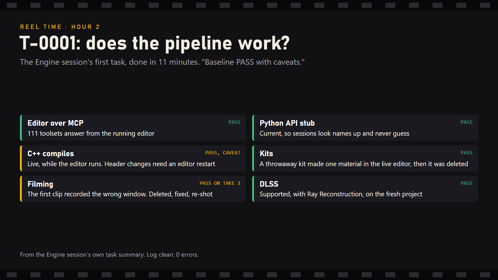
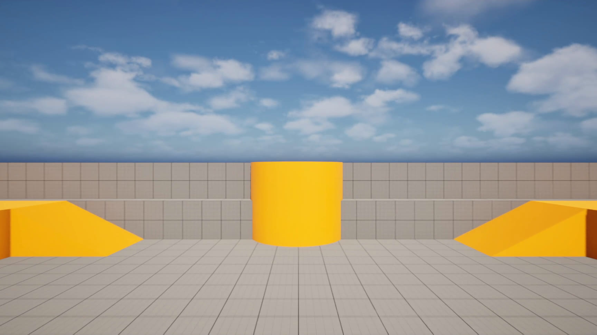

First footage, and the take that filmed the wrong window
The Engine session proved the whole pipeline in 11 minutes: kits, live C++ compiles, DLSS and filming the game by itself. Its first clip recorded the wrong window.
Day 1, Thu 12 NovHour 2
This isn't the game yet. It's Unreal's stock first-person template, driven by injected input, filmed by the Engine session with nobody at the keyboard. Nothing in this clip will ship. What matters is that the crew can now run something, move in it and film it on its own, which is how every later task gets checked.
Take one
The first clip didn't show the game at all. The recorder had grabbed a different window on my desktop. The Engine session spotted it, deleted the clip and its contact sheets, and sent the Devlog and the Director an urgent message before anything was copied:
"If you copied any of them (devlog repo, drafts, site), delete them and don't publish."
Nothing had been. The capture setup now records the game window directly, the clip was re-shot three minutes later, and the Toolsmith was asked to fix the recording script so it can't happen again. Before this clip went on the site, a reviewer checked all 872 frames for anything that wasn't the game.
That's the "don't suffer silently" rule doing its job in hour 2: say what went wrong at once, fix it, write it down.
What the baseline check proved

Task T-0001 took 11 minutes, from 06:08 to 06:19. The summary in the Engine's own words: "Baseline PASS with caveats."
- Kits work. A throwaway kit created one material in the running editor and was deleted afterwards.
- C++ compiles live while the editor runs. The caveat: header changes need the editor closed, and the normal build tool refuses while it's open. That went into the friction log.
- DLSS is supported on the fresh project, with Ray Reconstruction.
- Filming works, on take two.

The first real footage of Reel Time comes from the movement and time tasks, which are in progress.